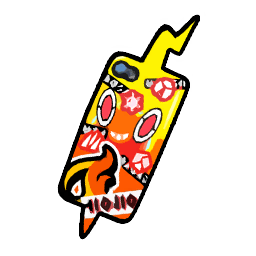

Connaissances
PNJ
Plus d'informations
#5f8159
Ranger. Plus vieux que Luna de trois ans. Rencontré dans la forêt de Vestigion. Il a sauvé des Pokémon chromatiques des griffes de trafiquants en présence de Luna. Il a renseigné Luna sur le métier de ranger. Au fur et à mesure, il va prendre Luna sous son aile et devenir une sorte de mentor. Luna le considère comme son ami.
Ranger. Plus vieux que Luna de trois ans. Rencontré dans la forêt de Vestigion. Il a sauvé des Pokémon chromatiques des griffes de trafiquants en présence de Luna. Il a renseigné Luna sur le métier de ranger. Au fur et à mesure, il va prendre Luna sous son aile et devenir une sorte de mentor. Luna le considère comme son ami.
PJ
Plus d'informations
Elle vient d'Alola. Croisée en boîte de nuit à Unionpolis. Les deux femmes avaient la même cible et ne semblaient pas s'apprécier.
Plus d'informations
Recontré à Mezclamora dans le dôme sombre. A aidé Luna à rechercher Kero qui avait disparu. A été très gentil avec elle. Semble très optimiste. A l'air d'apprécier le sucré. Il a gagné le respect de Luna. Il est barman dans un bar club d’Ohana, le Flamingo. Il propose à Luna d'y passer si un jour elle passe dans le coin.
Plus d'informations
Travaille (propriétaire ?) à la Ferme de la Source